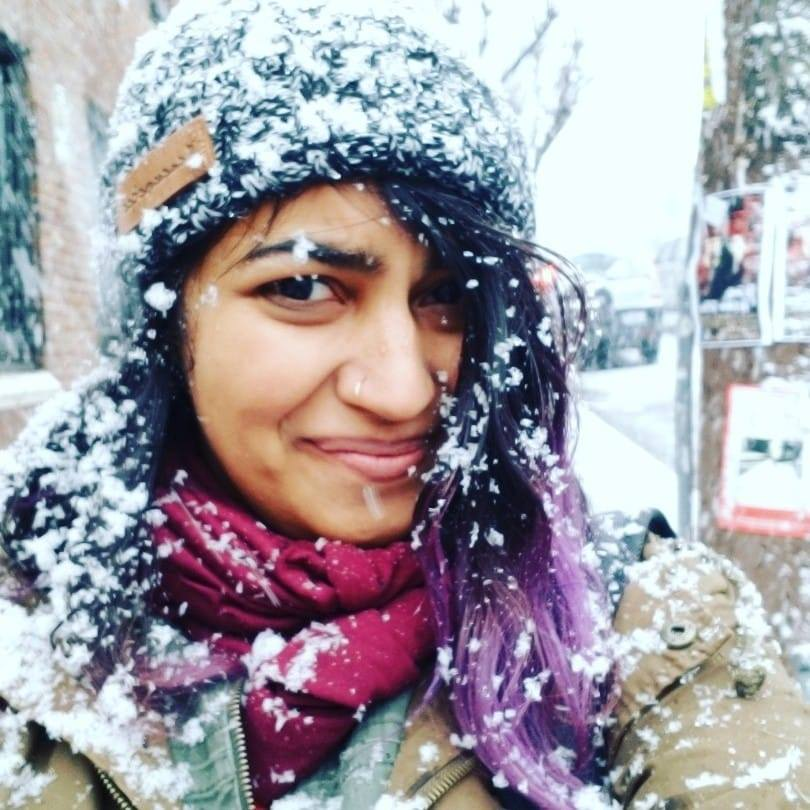

About Me
I'm Shubha Rajan (pronounced ʃʊbʱaː raːdʒən). I use both "she" and "they" pronouns.
I write code and make neat things.
I'm from Southern California, but I currently live in Seattle, WA and attend Ada Developers Academy full-time. I also volunteer at Seattle Makers where I help members troubleshoot machines and work on shop projects.
I am part of Free Radicals, an activist collective that aims to call out the ways that institutional STEM can harm marginalized communities and promote responsible science. I previously helped FreeRads revamp their website and am currently collaborating on creating a Radical Science education toolkit.
I am passionate about promoting creativity and new ideas, as well as connecting innovative ideas and resources with those who need them the most.
Things I do outside of work include:
- Writing comedy for the stage and occasionally performing
- Making my own board games and one-page-one-shot RPGs (think D&D but way shorter and sillier!)
- Taking pictures with my trusty Nikon
Get in touch: